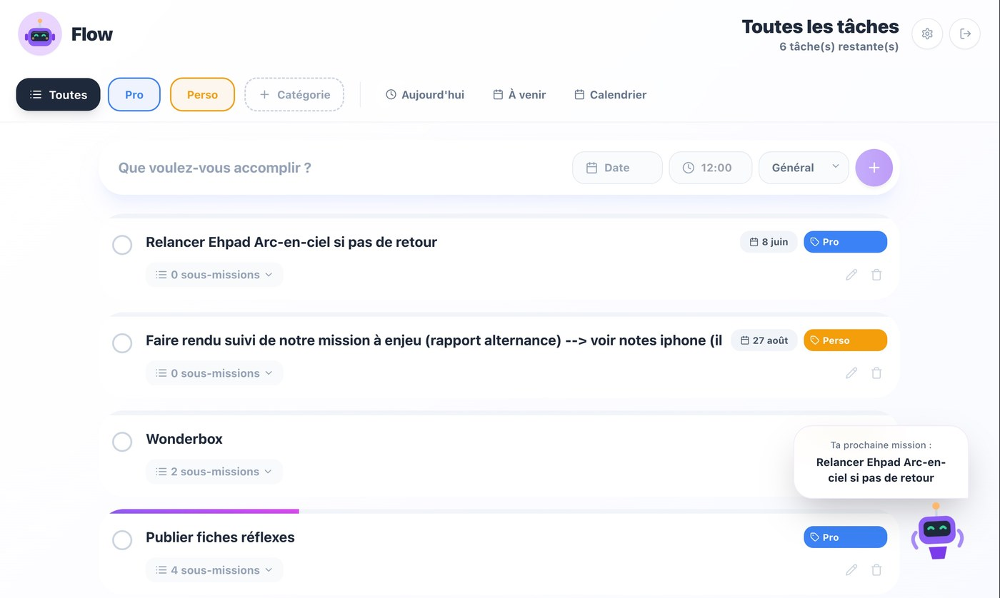
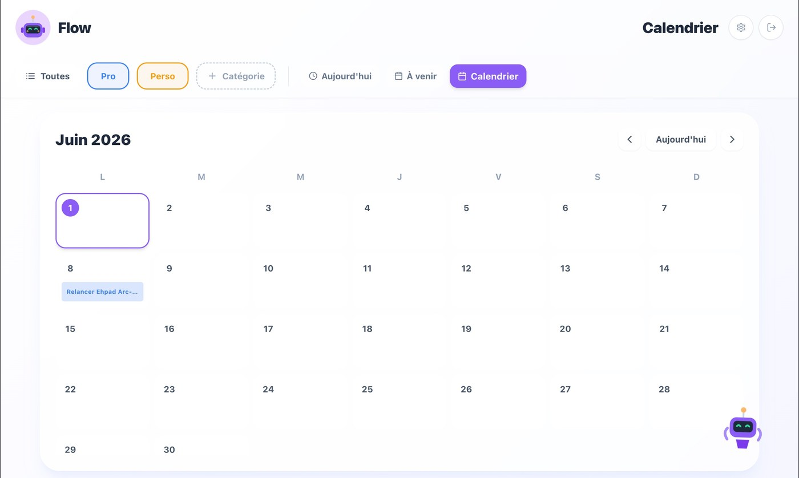
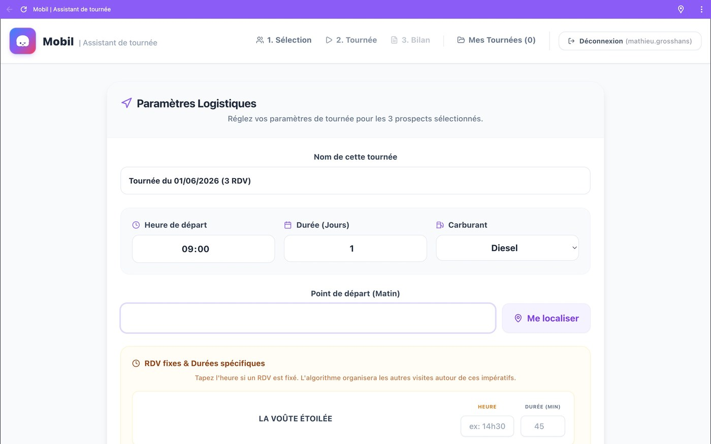
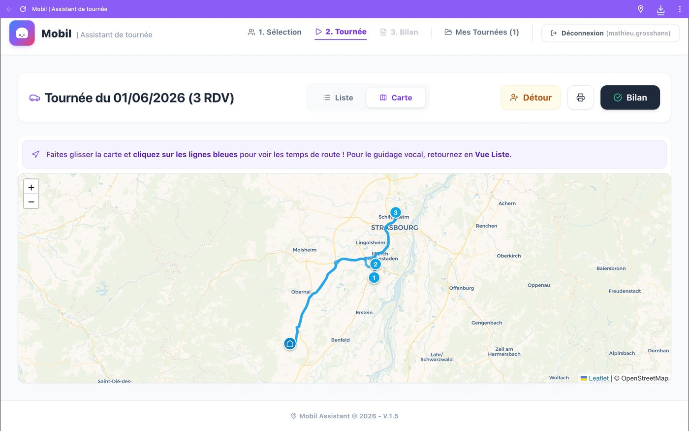
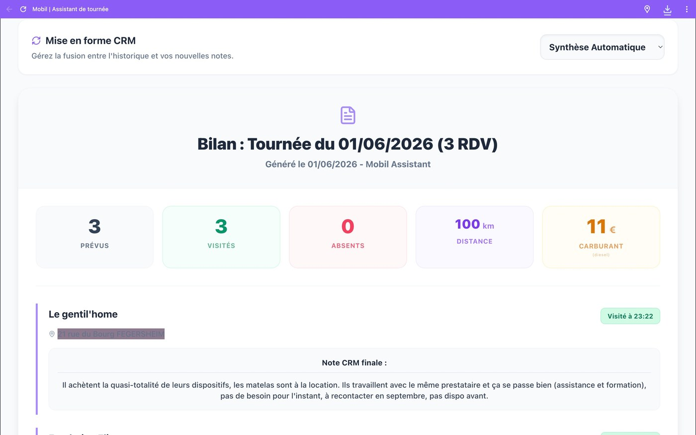

Vibe coding (IA)
Dialoguer avec l'IA pour générer, tester et déployer des applications sur-mesure, 100 % fonctionnelles.
Compétence · Les coulisses
« The things you own end up owning you. » — alors je les automatise.
L'automatisation, c'est identifier les tâches chronophages et répétitives d'une activité, puis concevoir les outils qui les exécutent à notre place. Avec l'essor de l'IA générative et du « vibe coding » (le développement assisté par l'intelligence artificielle), il n'est plus nécessaire d'être ingénieur pour passer du constat d'un frein à la solution logicielle sur-mesure qui le résout — de l'idée à l'application déployée.
Compétences développées
Au générique de cette compétence — ce que ces réalisations m'ont appris
Dialoguer avec l'IA pour générer, tester et déployer des applications sur-mesure, 100 % fonctionnelles.
Cartographier un besoin métier, prioriser les fonctionnalités et piloter une solution de bout en bout.
Intégrer un calcul d'itinéraire et une optimisation de planning au cœur d'une application.
Géolocalisation GPS, génération dynamique de PDF, structuration de bases de données.
Évoluant dans une structure où la polyvalence est indispensable, le volume de tâches quotidiennes à traiter devenait un véritable défi organisationnel. Pour éviter toute perte d'efficacité, j'ai pris l'initiative de concevoir mon propre outil de gestion de tâches.
J'ai abordé ce projet avec une véritable casquette de Chef de Produit. J'ai d'abord cartographié nos besoins organisationnels : catégorisation des missions et création d'une matrice de priorisation connectée à un calendrier pour isoler les urgences. Pour le développement, j'ai opté pour une approche innovante : le « vibe coding » (la programmation assistée par l'intelligence artificielle). En couplant mes compétences en gestion de projet aux capacités de l'IA, j'ai pu générer et déployer une application sur-mesure, 100 % fonctionnelle.
Ce projet marque un véritable tournant dans mon profil professionnel. Totalement novice en développement d'applications, j'ai découvert et maîtrisé le « vibe coding ». Aujourd'hui, je ne me contente plus de constater une problématique métier ou un frein à la productivité : je suis capable de dialoguer avec l'IA pour créer, de A à Z, la solution logicielle qui viendra la résoudre.


En analysant mon quotidien de commercial, j'ai réalisé que la planification de mes tournées était particulièrement chronophage et empiétait sur mes autres missions. Plutôt que de subir cette perte de temps, j'ai pris l'initiative de créer ma propre application de gestion de tournées pour automatiser cette logistique.
En capitalisant sur ma maîtrise du « vibe coding » (développement assisté par l'IA), j'ai conçu une application dotée d'une véritable « intelligence commerciale ». J'y ai intégré un algorithme capable de calculer l'itinéraire le plus rationnel et d'optimiser le planning de la journée. Pour aller au bout de la démarche d'automatisation, j'ai développé des fonctionnalités avancées permettant de générer instantanément la feuille de route avant le départ, ainsi que le bilan de tournée au format PDF à l'issue des visites.
Ce projet marque un véritable saut technologique dans mon parcours. Il prouve ma capacité à concevoir des solutions logicielles complexes de bout en bout. Je maîtrise désormais l'intégration de fonctionnalités avancées (géolocalisation GPS, génération dynamique de documents PDF, structuration de bases de données) pour répondre à des problématiques métiers exigeantes.


